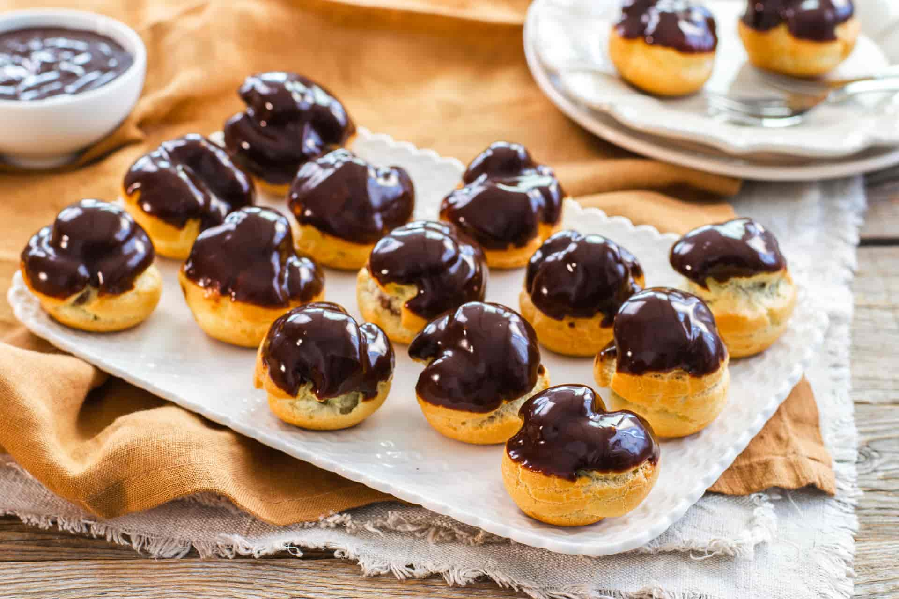

Bignè in Pasta Choux
I classici bignè della pasticceria fine: gusci di pasta choux dorati, soffici e vuoti all'interno, pronti per essere farciti con vellutata crema pasticcera, ganache al cioccolato o panna, e completati con glassa o zucchero a velo.

Ingredienti
Per la Pasta Choux (Gusci):
- 250ml di Acqua (oppure metà acqua e metà latte)
- 100g di Burro
- 150g di Farina 00
- 4 Uova medie (circa 200g, a temperatura ambiente)
- 1 pizzico di Sale fino
- 1 cucchiaino di Zucchero semolato
Per la Farcitura (A scelta):
- Variante Crema: 400g di Crema Pasticcera al limone o vaniglia.
- Variante Cioccolato: 400g di Crema o Ganache al Cioccolato.
- Variante Panna: 400ml di Panna fresca montata e zuccherata.
Per la Finitura e Glassa:
- Grumi di Glassa: Cioccolato fondente fuso, glassa al cacao o fondente di zucchero.
- In alternativa: Generosa spolverata di Zucchero a velo.
Procedimento
- Preparazione del polentino: In un pentolino unisci acqua, burro a pezzetti, sale e zucchero. Porta a bollore a fuoco medio finché il burro non si scioglie completamente.
- Aggiunta della farina: Togli il pentolino dal fuoco, versa la farina tutta in una volta e mescola energicamente con un cucchiaio di legno.
- Cottura del composto: Rimetti il pentolino sul fuoco e cuoci mescolando per 1-2 minuti, finché il composto non si stacca dalle pareti formando una palla e lasciando un velo bianco sul fondo della pentola. Lascia intiepidire.
- Incorporazione delle uova: Trasferisci il composto in una ciotola. Aggiungi le uova **una alla volta**, lavorando bene dopo ogni aggiunta. Non aggiungere l'uovo successivo finché il precedente non è stato completamente assorbito (l'impasto finale deve risultare lucido ed elastico, come una crema densa).
- Formatura dei bignè: Metti la pasta choux in una sac-à-poche con bocchetta liscia. Forma delle noci d'impasto su una teglia rivestita di carta da forno, distanziandole tra loro.
- Cottura in forno: Cuoci in forno statico preriscaldato a 200°C per 15 minuti, poi abbassa a 180°C e cuoci per altri 10 minuti finché non sono dorati e cavi all'interno. Negli ultimi 5 minuti tieni lo sportello del forno leggermente fessurato.
- Farcitura e Decorazione: Fai raffreddare i bignè. Pratica un piccolo foro sul fondo con la punta di un coltello e farciscili con la crema scelta (pasticcera o cioccolato) usando una sac-à-poche. Intingi la superficie nella glassa al cioccolato fuso oppure spolverizza con zucchero a velo.
💡 Note Finali e Consigli dell'Mastro Pasticcere
- Mai aprire il forno! Durante i primi 15 minuti di cottura non aprire mai lo sportello del forno, altrimenti il vapore uscirà e i bignè si sgonfieranno irrimediabilmente.
- Umidità interna: Per assicurarti che i bignè rimangano croccanti all'esterno e ben asciutti dentro, bucali sul fondo appena sfornati e lasciali asciugare nel forno spento e aperto per 10 minuti.
- Conservazione: I gusci vuoti di pasta choux si conservano per 3-4 giorni in un contenitore ermetico oppure possono essere congelati. Una volta farciti vanno conservati in frigo per massimo 1-2 giorni.